C=Conference, J=Journal, P=Pre-print, ∗: Eequal contributions, †: Corresponding authors
-
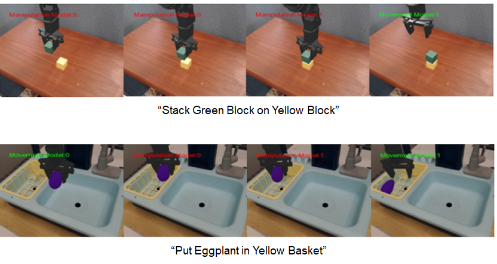
[P5] DAM-VLA: VLM-based Dynamic Action Model for Robot Manipulation
Xiongfeng Peng, Jiaqian Yu, Yamin Mao, Yi Zhou, Chao Zhang, Weiming Li, Sujin Jang, Dongwook Lee, Daehyun Ji
-
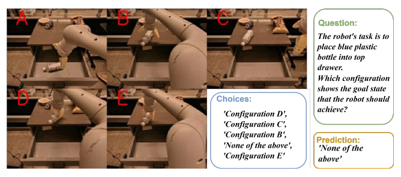
[P4] MoSE: Skill-by-Skill Mixture-of-Experts Learning for Embodied Autonomous Machines
Lu Xu, Jiaqian Yu, Xiongfeng Peng, Yiwei Chen, Weiming Li, Jaewook Yoo, Sunghyun Chung, Sujin Jang, Dongwook
Lee, Daehyun Ji, Chao Zhang
-
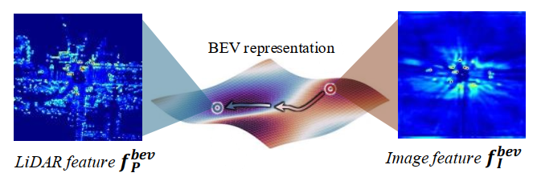
[P2] Cross-Modal Domain Generalization for Multi-View 3D Object Detection
Gyusam Chang, Jiwon Lee, Sujin Jang, Jinkyu Kim, Dongwook Lee, Daehyun Ji, Wonjeong Ryoo, Sangpil Kim
-
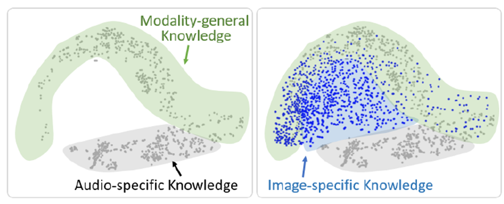
[P1] Understanding Dimensional Collapse in Cross-Modal Feature Distillation
Dae Ung Jo∗, Sujin Jang∗, Jay Heo, Sung Ju Hwang
-
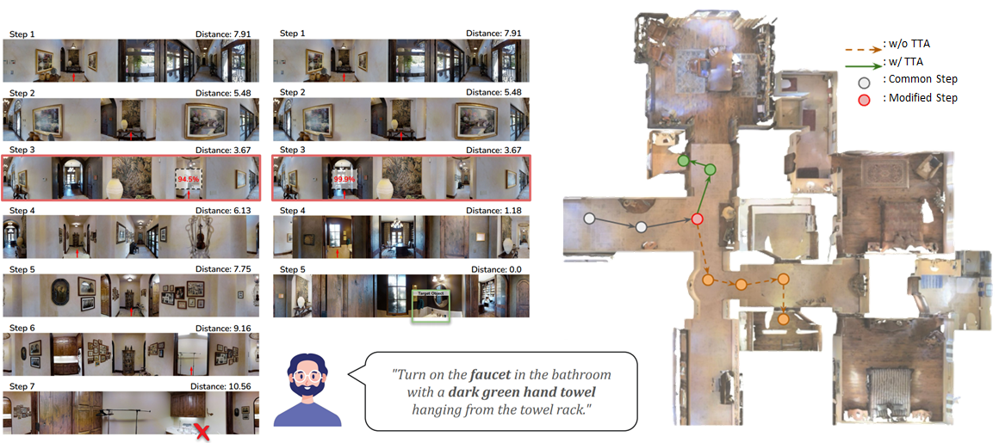
[C13]
Active Test-time Vision-Language Navigation
Heeju Ko, Sungjune Kim, Gyeongrok Oh, Jeongyoon Yoon, Honglak Lee,
Sujin Jang, Seungryong Kim, Sangpil Kim
Conference on Neural Information Processing Systems (
NeurIPS, 24.5% acceptance rate), 2025
[arXiv]
-
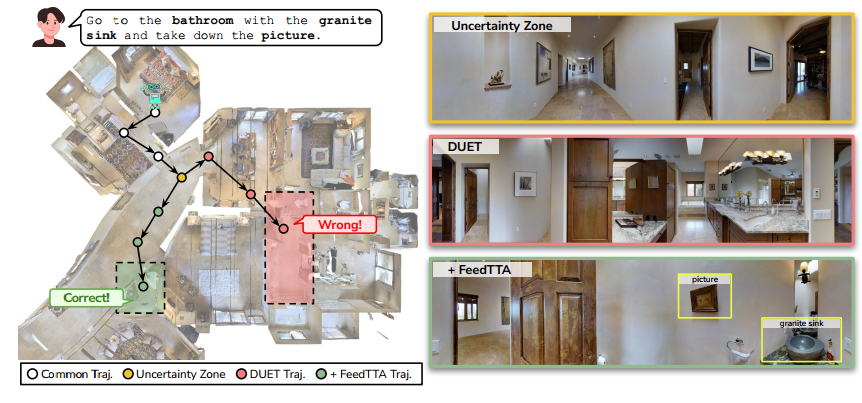
[C12]
Test-Time Adaptation for Online Vision-Language Navigation with Feedback-based Reinforcement Learning
Sungjune Kim
∗, Gyeongrok Oh
∗, Heeju Ko, Daehyun Ji, Dongwook Lee, Byung-Jun Lee,
Sujin Jang†, Sangpil Kim
†
International Conference on Machine Learning (
ICML, 26.9% acceptance rate), 2025
[paper]
-
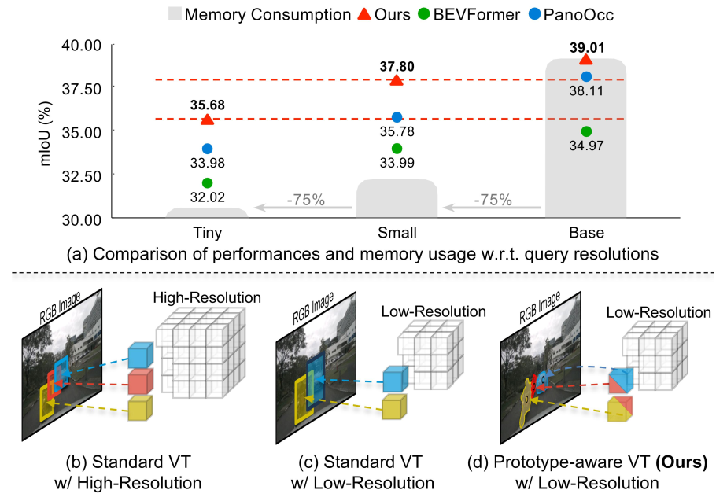
[C11]
3D Occupancy Prediction with Low-Resolution Queries via Prototype-aware View Transformation
Gyeongrok Oh
∗, Sungjune Kim
∗, Heeju Ko, Hyung-gun Chi, Jinkyu Kim, Dongwook Lee, Daehyun Ji, Sungjoon Choi,
Sujin Jang†, Sangpil Kim
†
Conference on Computer Vision and Pattern Recognition (
CVPR, 22.1% acceptance rate), 2025
[paper]
[project_page]
-
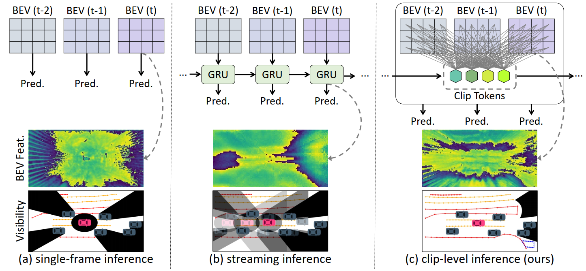
[C10]
Unveiling the Hidden: Online Vectorized HD Map Construction with Clip-Level Token Interaction and Propagation
Nayeon Kim
∗, Hongje Seong
∗, Daehyun Ji,
Sujin Jang†
Conference on Neural Information Processing Systems (
NeurIPS, 25.8% acceptance rate), 2024
[paper]
[project_page]
[bibtex]
-
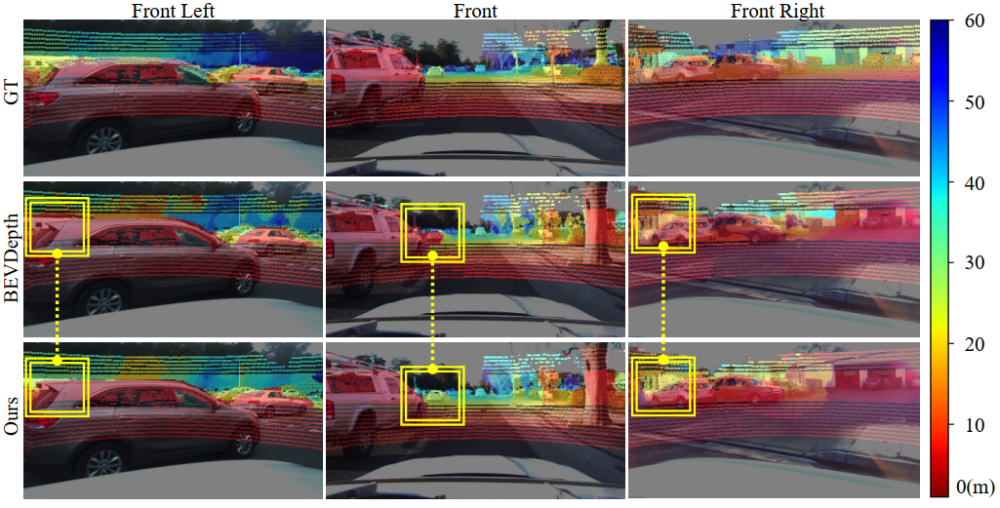
[C9]
Unified Domain Generalization and Adaptation for Multi-View 3D Object Detection
Gyusam Chang
∗, Jiwon Lee
∗, Donghyun Kim, Jinkyu Kim, Dongwook Lee, Daehyun Ji,
Sujin Jang†, Sangpil Kim
†
Conference on Neural Information Processing Systems (
NeurIPS, 25.8% acceptance rate), 2024
[paper]
[project_page]
[code]
[bibtex]
-
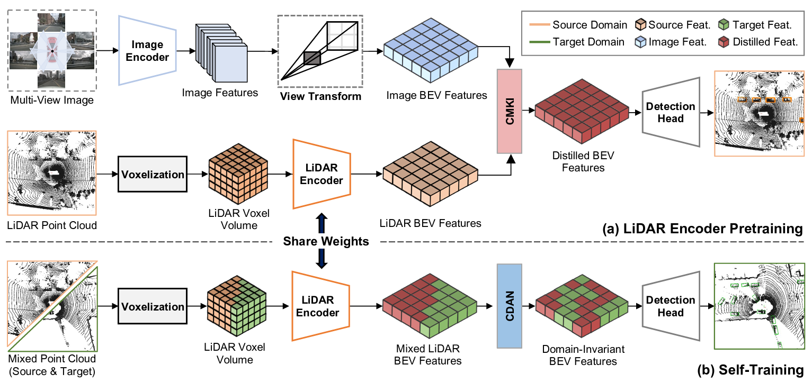
[C8]
CMDA: Cross-Modal and Domain Adversarial Adaptation for LiDAR-based 3D Object Detection
Gyusam Chang
∗, Wonweok Roh
∗,
Sujin Jang, Dongwook Lee, Daehyun Ji, Gyeongrok Oh, Jinsun Park, Jinkyu Kim, Sangpil Kim
AAAI Conference on Artificial Intelligence (
AAAI, 23.7% acceptance rate), 2024
[paper]
[arXiv]
[supp]
[video]
[poster]
[bibtex]
-
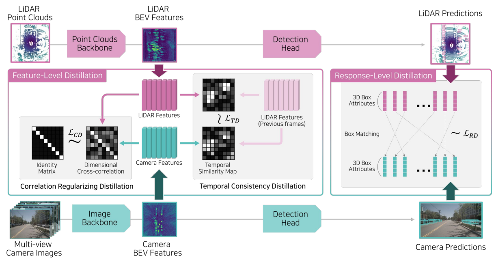
[C7]
STXD: Structural and Temporal Cross-Modal Distillation for Multi-View 3D Object Detection
Sujin Jang∗, Dae Ung Jo
∗, Sung Ju Hwang, Dongwook Lee, Daehyun Ji
Conference on Neural Information Processing Systems (
NeurIPS, 26.1% acceptance rate), 2023
[paper]
[slides]
[poster]
[bibtex]
-
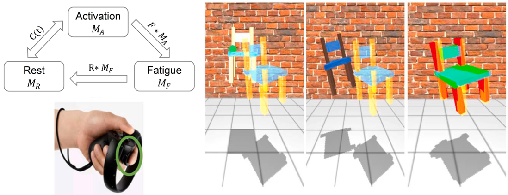
[J2]
Advanced Modeling Method for Quantifying Cumulative Subjective Fatigue in Mid-Air Interaction
Ana Villanueva
∗,
Sujin Jang∗, Wolfgang Stüerzlinger, Satyajit Ambike, Karthik Ramani
International Journal of Human-Computer Studies (
IJHCS), Vol 169, 2023
[paper]
[bibtex]
-
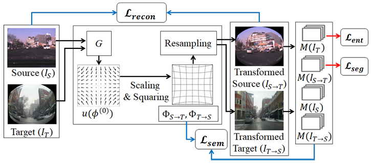
[C6]
DaDA: Distortion-aware Domain Adaptation for Unsupervised Semantic Segmentation
Sujin Jang, Joohan Na, Dokwan Oh
Conference on Neural Information Processing Systems (
NeurIPS-Oral, 184/2665~6.9%), 2022
[paper]
[project_page]
[slides]
[poster]
[bibtex]
-
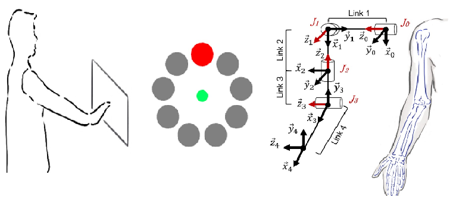
[C5]
Modeling Cumulative Arm Fatigue in Mid-Air Interaction based on Perceived Exertion and Kinetics of Arm Motion
Sujin Jang, Wolfgang Stüerzlinger, Satyajit Ambike, Karthik Ramanii
ACM Conference on Human Factors in Computing Systems (
CHI, 25% acceptance rate), 2017
[paper]
[slides]
[code]
[bibtex]
-
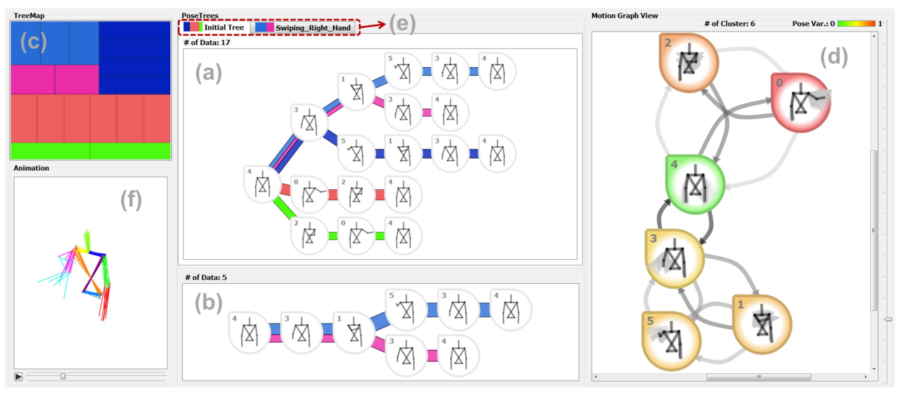
[J1]
MotionFlow: Visual Abstraction and Aggregation of Sequential Patterns in Human Motion Tracking Data
Sujin Jang, Niklas Elmqvist, Karthik Ramani
IEEE Transaction on Visualization and Computer Graphics (
TVCG), Vol 22. no.1, 2016, *Presented at IEEE Conference on Visual Analytics Science & Technology (
VAST, 22% acceptance rate), 2015
[paper]
[video-30sec]
[video-full]
[slides]
[bibtex]
-
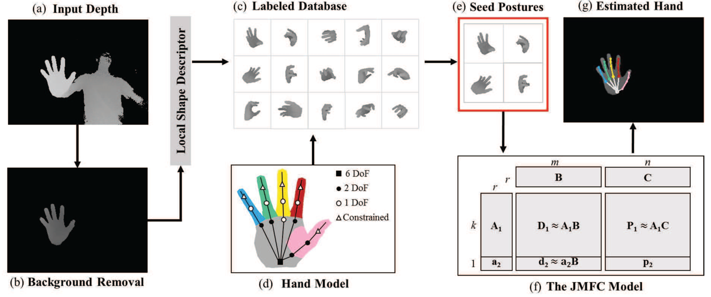
[C4]
A Collaborative Filtering Approach to Real-Time Hand Pose Estimation
Chiho Choi, Ayan Sinha, Joon Hee Choi,
Sujin Jang, Karthik Ramani
IEEE International Conference on Computer Vision (
ICCV), 2015
[paper]
[supp]
[video]
[bibtex]
-
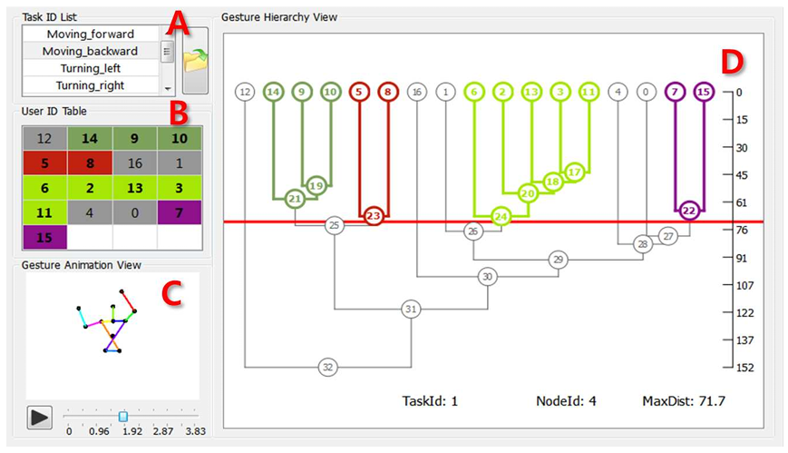
[C3]
GestureAnalyzer: Visual Analytics for Pattern Analysis of Mid-Air Hand Gestures
Sujin Jang, Niklas Elmqvist, Karthik Ramani
ACM Symposium on Spatial User Interaction (
SUI, 29% acceptance rate), 2014
[paper]
[video]
[bibtex]
-
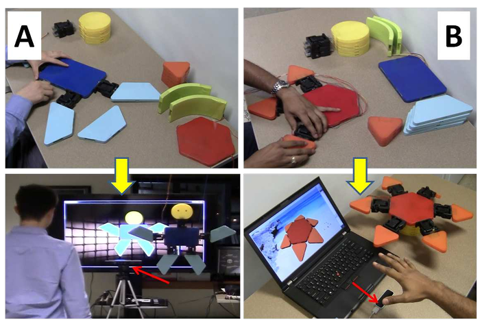
[C2]
PuppetX: A Framework for Gestural Interactions With User Constructed Playthings
Saikat Gupta,
Sujin Jang, Karthik Ramani
ACM Conference on Advanced Visual Interfaces (
AVI, 28% acceptance rate), 2014
[paper]
[video]
[bibtex]
-
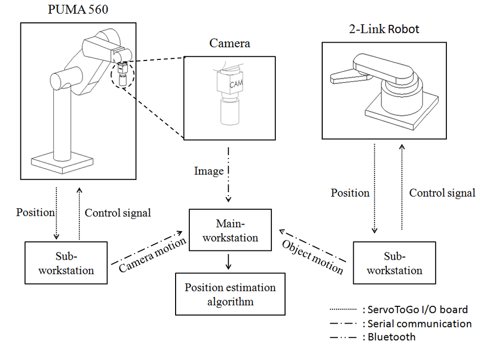
[C1]
Experimental Results for Moving Object Structure Estimation using an Unknown Input Observer Approach
Sujin Jang, Ashwin Dani, Carl Crane, Warren Dixon
ASME Dynamic Systems and Control Conference (
DSCC, Best Paper in Session Award), 2012
[paper]
[video1]
[video2]
[bibtex]
Patents
∘ Granted
-
Method and device with data processing using neural network
-
US Patent US12169917B2, 2024
-
Pressure Sensing Device Interface Representation
-
US Patent US11320984B2, 2022
-
Modifying an Image based on Identifying a Feature
-
US Patent US11023769B2, 2021
∘ Published & Pending
-
Method and Apparatus with Object Detection Model Training
-
US Patent App. US20250157195A1, 2025
-
Method and Apparatus with Vector Map Learning and Generation
-
US Patent App. US20250086469A1, 2025
-
Method and Apparatus with Object Estimation Model Training
-
US Patent App. US20240211749A1, 2024
-
Method and Apparatus with Object Detector Training
-
US Patent App. US20240161442A1, 2024
-
Method and Apparatus with Data Labeling
-
US Patent App. US20230360381A1, 2023
Professional Experience
∘ AI Center, Samsung Electronics Co., Suwon, South Korea
⋅ Principal Researcher (Task Leader), Autonomous Machine Intelligence Team (Dec. 2024 - Present)
∘ SAIT (Samsung Advanced Institute of Technology), Suwon, South Korea
⋅ Principal Researcher, Autonomous Driving Team (Mar. 2024 - Dec. 2024)
⋅ Staff Researcher, Autonomous Driving Team (Jun. 2020 - Feb. 2024)
∘ System LSI, Samsung Electronics Co., Hwaseong, South Korea
⋅ Staff Engineer, Autonomous Driving Team (Jan. 2019 - May 2020)
∘ Motorola Mobility LLC., Chicago, IL, USA
⋅ Machine Learning Staff Researcher, Device+Machine Learning Team (Jun. 2017 - Dec. 2018)
Education
∘ Kookmin University, Seoul, South Korea
⋅ B.S., Mechanical and Automotive Engineering (Aug. 2010)
- Advisor: Dr. Jungha Kim
- Undergraduate Research Assistant, Unmanned Vehicle Lab.
Honors and Awards
∘ Samsung Best Paper Award for "Distortion-aware Domain Adaptation" (AI/SW), Samsung Group, 2023
∘ NeurIPS Oral Presentation (Top 6.9% of Submissions), Neural Information Processing Systems, 2022
∘ Boundless Search for Breakthroughs Award for "Autonomous Driving", SAIT, Samsung Electronics, 2022
∘ Device+ Team Excellence Award for "AR Vertical Healthcare", Lenovo, 2018
∘ Estus H. and Vashti L. Magoon Award for Teaching Excellence, Purdue University, 2015
∘ Best Paper in Session Award, ASME Dynamic Systems and Control Conference, 2012
Academic Service
∘ Machine Learning & Computer Vision Community
- [CVPR] Reviewer, IEEE Conference on Computer Vision and Pattern Recognition (2023,2024,2025)
- [ICCV] Reviewer, CVF/IEEE International Conference on Computer Vision (2025)
- [ECCV] Reviewer, European Conference on Computer Vision (2024)
- [WACV] Reviewer, IEEE/CVF Winter Conference on Applications of Computer Vision (2026)
- [NeurIPS] Reviewer, Conference on Neural Information Processing Systems (2025)
- [AAAI] Reviewer, AAAI Conference on Artificial Intelligence (2025,2026)
- [JCISE] Reviewer, ASME Journal of Computing and Information Science in Engineering (2023)
∘ Human-Computer Interaction Community
- [CSCW] Reviewer, ACM Conference on Computer Supported Collaborative Work (2016,2018,2019,2024)
- [CHI] Reviewer, ACM Conference on Human Factors in Computing Systems (2016,2018,2019,2021,2024)
- [ISMAR] Reviewer, IEEE International Symposium on Mixed and Augmented Reality (2021)
- [VR] Reviewer, IEEE Conference on Virtual Reality and 3D User Interfaces (2018,2019)
- [3DUI] Reviewer, IEEESymposium on 3D User Interfaces (2016)
- [TVCG] Reviewer, IEEE Transaction on Visualization and Computer Graphics (2017)
- [VAST] Reviewer, IEEE Conference on Visual Analytics Science and Technology (2016~2020)
- [InfoVis] Reviewer, IEEE Conference on Information Visualization (2015)
- [EuroVis] Reviewer, EG/VGTC Conference on Data Visualization (2016)
- [VIS] Student Volunteer (2015)
- [UIST] Reviewer, ACM Symposium on User Interface Software and Technology (2018)
- [MobileCHI] Reviewer, ACM International Conference on Mobile Human-Computer Interaction (2019)
- [SUI] Reviewer, ACM Symposium on Spatial User Interaction (2019)
- [DIS] Reviewer, ACM Conference on Designing Interactive Systems (2016~2017)
- [TEI] Reviewer, ACM Conference on Tangible, Embedded, and Embodied Interaction (2017)
- [IDC] Reviewer, ACM Conference on Interaction Design and Children (2017)
- [VRST] Reviewer, ACM Conference on Virtual Reality Software and Technology (2017)
Last updated:

![[poster]](assets/stxd_neurips_poster.png){kind=link}
![[poster]](assets/dada_neurips_poster.png){kind=link}